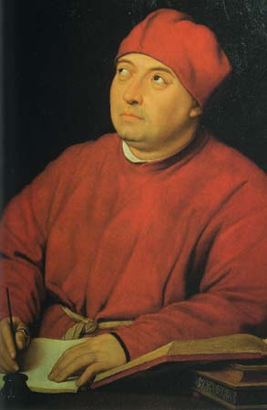

| Главная страница |
Архитектура |
Художественное искусство |
Музыка и театр |
|
Леонардо да Винчи Микеланджело Рафаэль Боттичелли |

Микеланджело Буонарроти (1475- 15б4) - величайший мастер Высокого Возрождения, создавший выдающиеся произведения скульптуры, живописи и архитектуры. Детство Микеланджело прошло в маленьком тосканском городке Ка-презе близ Флоренции. Юность и годы учения он провёл во Флоренции. В художественной школе при дворе герцога Лоренцо Медичи ему открылась красота античного искусства, он общался с великими представителями гуманистической культуры. Флоренции принадлежат почти все скульптурные работы Микеланджело. Он похоронен во флорентийской церкви Санта-Кроче. Однако в равной мере и Рим может быть назван городом Микеланджело... |